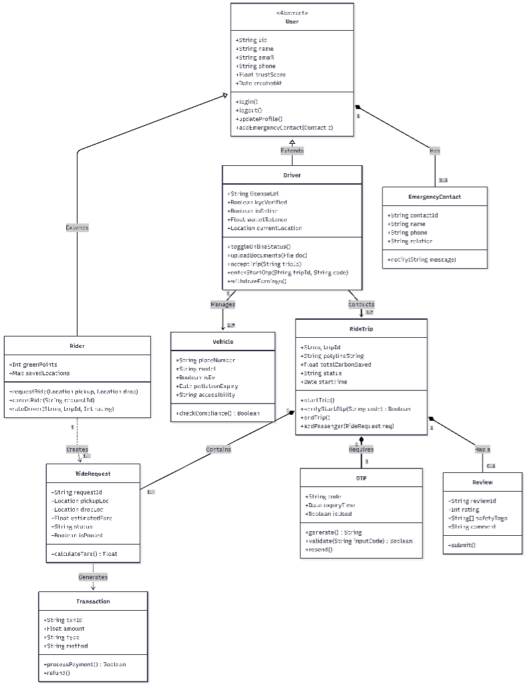
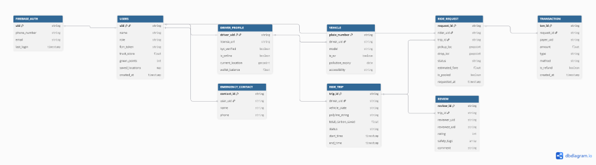
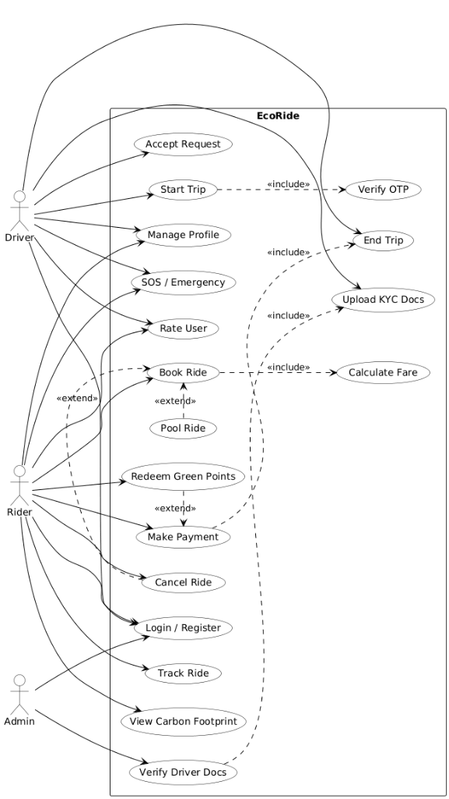
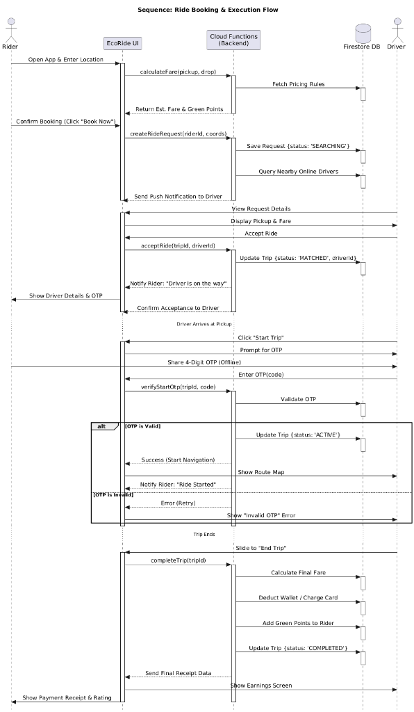

Eco-Ride Documentation
Eco-Ride
Eco-Ride is a comprehensive ride-sharing platform focused on eco-friendly transportation, built with modern web technologies.
Table of Contents
- Intro
- About
- Installing and Updating
- Usage
- Running Tests
- Environment Variables
- System Architecture
- Maintainers
- License
Intro
Eco-Ride allows users to book eco-friendly rides, drivers to manage their trips, and admins to oversee the platform operations via a modern web interface and mobile application.
About
Eco-Ride is designed to provide a seamless transportation experience while promoting sustainability. Key features include:
- Real-time Ride Tracking: Integrated with Google Maps for accurate location services.
- Secure Payments: Powered by Stripe for reliable transactions.
- Role-Based Access: Specialized interfaces for Riders, Drivers, and Admins.
- Scalable Backend: Built on Node.js/Express with Firebase services.
- Cross-Platform: Accessible via a responsive Web App (Next.js) and Mobile App (React Native).
The platform leverages a monorepo structure managed by Turborepo, ensuring efficient development, shared configurations, and optimized build processes.
Installing and Updating
To install and update Eco-Ride, follow the instructions below.
Prerequisites
Ensure you have the following installed on your system:
- Node.js: v18 or higher (LTS recommended)
- pnpm: Package manager (install via
npm i -g pnpm) - Git: Version control system
Installation
To install the project, you should clone the repository and install the dependencies:
-
Clone the repository:
git clone https://github.com/Adhikkesh/Eco-Ride.git
cd Eco-Ride -
Install dependencies:
pnpm installThis command installs all dependencies for the entire monorepo, including web, mobile, and backend applications.
-
Set up Environment Variables: Create a
.envfile in theapps/webandapps/backend/serverdirectories based on the provided documentation or template. Essential keys include:- Firebase Configuration
- Google Maps API Key
- Stripe Secret/Public Keys
Usage
Development
To start the development environment for all applications concurrently:
pnpm dev
This command uses Turbo to launch:
- Web Application: Available at
http://localhost:3000 - Backend Server: Runs on port
3001(default) - Simulator: Runs on its configured port
Production Build
To build the project for production:
pnpm build
To start the production server:
pnpm start
Mobile Application
To run the mobile application separately:
cd apps/mobile
npx expo start
Use the Expo Go app on your Android/iOS device to scan the QR code and run the app.
Running Tests
Tests are implemented using Vitest for the backend services. To run the tests suite:
pnpm test
This will execute unit and integration tests across the packages.
To run tests with coverage reporting:
pnpm test:coverage
Environment Variables
Eco-Ride exposes the following environment variables. Ensure these are configured in your .env files:
DATABASE_URL: Connection string for the database (if applicable).FIREBASE_API_KEY: API Key for Firebase services.FIREBASE_AUTH_DOMAIN: Firebase Auth Domain.FIREBASE_PROJECT_ID: Firebase Project ID.GOOGLE_MAPS_API_KEY: API Key for Google Maps integration.STRIPE_SECRET_KEY: Secret Key for server-side Stripe operations.NEXT_PUBLIC_STRIPE_PUBLISHABLE_KEY: Public Key for client-side Stripe operations.PORT: Port number for the backend server (default: 3001).
System Architecture
Tech Stack
- Frontend (Web): Next.js 15, TypeScript, Tailwind CSS 4
- Mobile: React Native, Expo
- Backend: Node.js, Express, Firebase Admin SDK
- Database: Firestore (NoSQL)
- Tools: Turborepo, Biome (Linting/Formatting)
Architecture Diagram
High-level overview of the Eco-Ride system architecture, illustrating the interaction between Frontend, Backend, Database, and External Services.

Diagrams
Class Diagram
An overview of the system's object-oriented structure, including Users, Drivers, Rides, and Vehicles.

ER Diagram (Entity-Relationship)
Visualizes the database schema, including users, ride requests, trips, transactions, and vehicle details within Firestore.

Use Case Diagram
Illustrates the interactions between the primary actors (Rider, Driver, Admin) and the system's use cases.

Sequence Diagram (Time Sequence)
Depicts the chronological sequence of interactions during a typical ride booking and execution flow.

Maintainers
Currently maintained by the Eco-Ride Development Team.
License
This project is proprietary and confidential. Unauthorized copying, distribution, or use of this file, via any medium, is strictly prohibited.